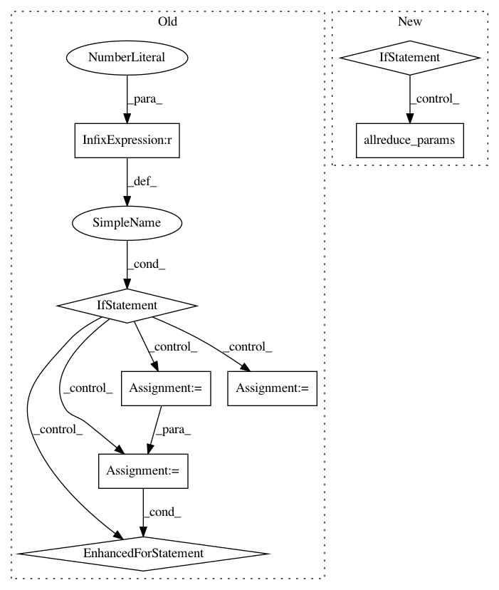

50a33950a4b23c614152696e6f979ae978233432,mmcv/runner/hooks/checkpoint.py,CheckpointHook,after_train_epoch,#CheckpointHook#Any#,44
Before Change
self.out_dir, save_optimizer=self.save_optimizer, **self.args)
// remove other checkpoints
if self.max_keep_ckpts > 0:
filename_tmpl = self.args.get("filename_tmpl", "epoch_{}.pth")
current_epoch = runner.epoch + 1
for epoch in range(current_epoch - self.max_keep_ckpts, 0, -1):
ckpt_path = os.path.join(self.out_dir,
filename_tmpl.format(epoch))
if os.path.exists(ckpt_path):
os.remove(ckpt_path)
else:
break
@master_only
def after_train_iter(self, runner):
if self.by_epoch or not self.every_n_iters(runner, self.interval):
return
After Change
return
runner.logger.info(f"Saving checkpoint at {runner.epoch + 1} epochs")
if self.sync_buffer:
allreduce_params(runner.model.buffers())
self._save_checkpoint(runner)
@master_only
def _save_checkpoint(self, runner):
In pattern: SUPERPATTERN
Frequency: 3
Non-data size: 8
Instances
Project Name: open-mmlab/mmcv
Commit Name: 50a33950a4b23c614152696e6f979ae978233432
Time: 2020-10-14
Author: swanxinjiang@gmail.com
File Name: mmcv/runner/hooks/checkpoint.py
Class Name: CheckpointHook
Method Name: after_train_epoch
Project Name: open-mmlab/mmcv
Commit Name: 50a33950a4b23c614152696e6f979ae978233432
Time: 2020-10-14
Author: swanxinjiang@gmail.com
File Name: mmcv/runner/hooks/sync_buffer.py
Class Name: SyncBuffersHook
Method Name: after_epoch
Project Name: open-mmlab/mmcv
Commit Name: 50a33950a4b23c614152696e6f979ae978233432
Time: 2020-10-14
Author: swanxinjiang@gmail.com
File Name: mmcv/runner/hooks/checkpoint.py
Class Name: CheckpointHook
Method Name: after_train_iter